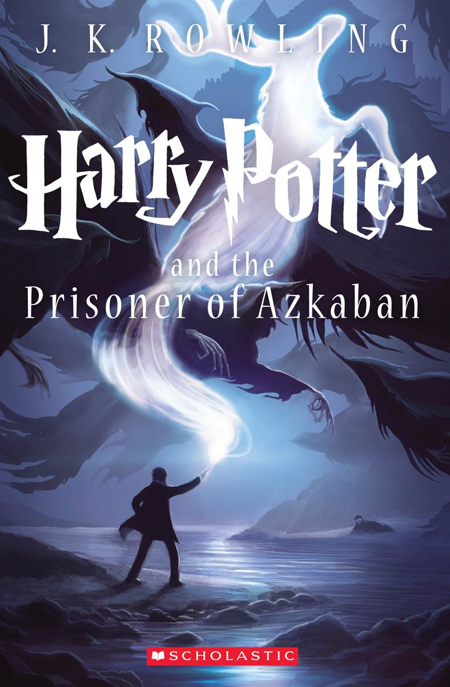

favorite books
In this table is a list of some of my favorite books that I have read, I like mostly fantasy and fiction books, in the covers you can find a link to read more about them in their wikipedia websites
| Author | Book tittle | Pages | Cover | ||||
|---|---|---|---|---|---|---|---|
| Edgar Allan Poe | Stories and Poems 1984 |
560 | |||||
| J. K. Rowling | Harry Potter and the Philosopher’s Stone 1997 |
223 |  |
||||
| J. K. Rowling | Harry Potter and the Chamber of Secrets 1998 |
251 |  |
||||
| J. K. Rowling | Harry Potter and the Prisoner of Azkaban 1999 |
317 |  | ||||
| J. K. Rowling | Harry Potter and the Goblet of Fire 2000 |
636 |  |
||||
| J. K. Rowling | Harry Potter and the Order of the Phoenix 2003 |
766 | |||||
| J. K. Rowling | Harry Potter and the Half-Blood Prince 2005 |
607 |  |
||||
| J. K. Rowling | Harry Potter and the Deathly Hallows 2007 |
607 |  |
||||
| J. R. R. Tolkien | The Fellowship of the Ring 1954 |
423 |  |
||||
| J. R. R. Tolkien | The Two Towers 1954 |
352 | |||||
| J. R. R. Tolkien | The Return of the King 1955 |
416 | |||||
| Orson Scott Card | Ender’s Game 1985 |
324 |  |
||||
| Orson Scott Card | Speaker for the Dead 1986 |
415 | |||||
| Orson Scott Card | Xenocide 1991 |
592 | |||||
Memorable Quotes
Quotes that touched me on my favorite books
"I think it’s impossible to really understand somebody, what they want, what they believe, and not love themselves"
"It does not do well to dwell on dreams and forget to live."
"It is the unknown we fear when we look upon death and darkness, nothing more."
List of books that I’m interesting on reading next.
- Lovecraft horror stories
- the fundation by Issac Assimov
- The divine comedy by Dante
favorite shows and movies
In contrast with my favorite books that are mainly sci-fiction. For shows and movies I like a wide variety of genres, so this table will be a bit diffenret from the previous one but will have the most important infomation to know the show and links to read more about them.
*to see the clasification in imdb click the image